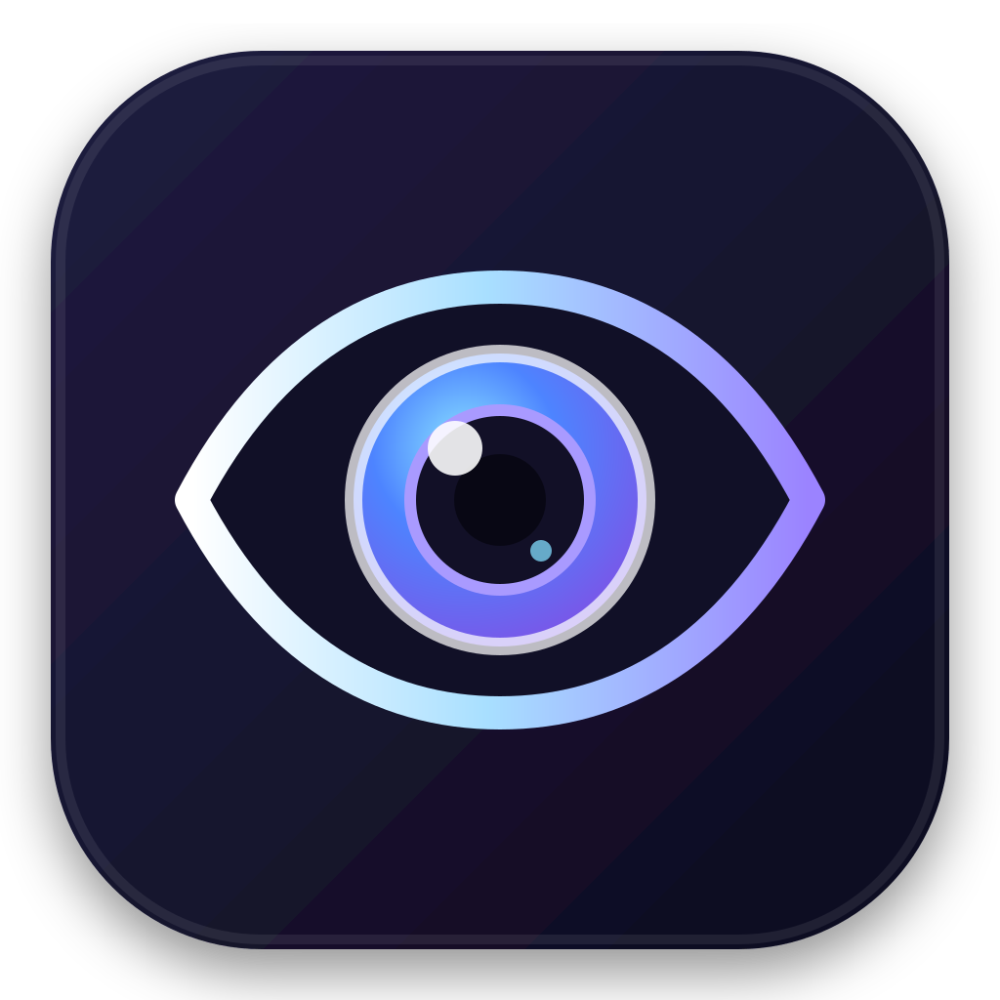
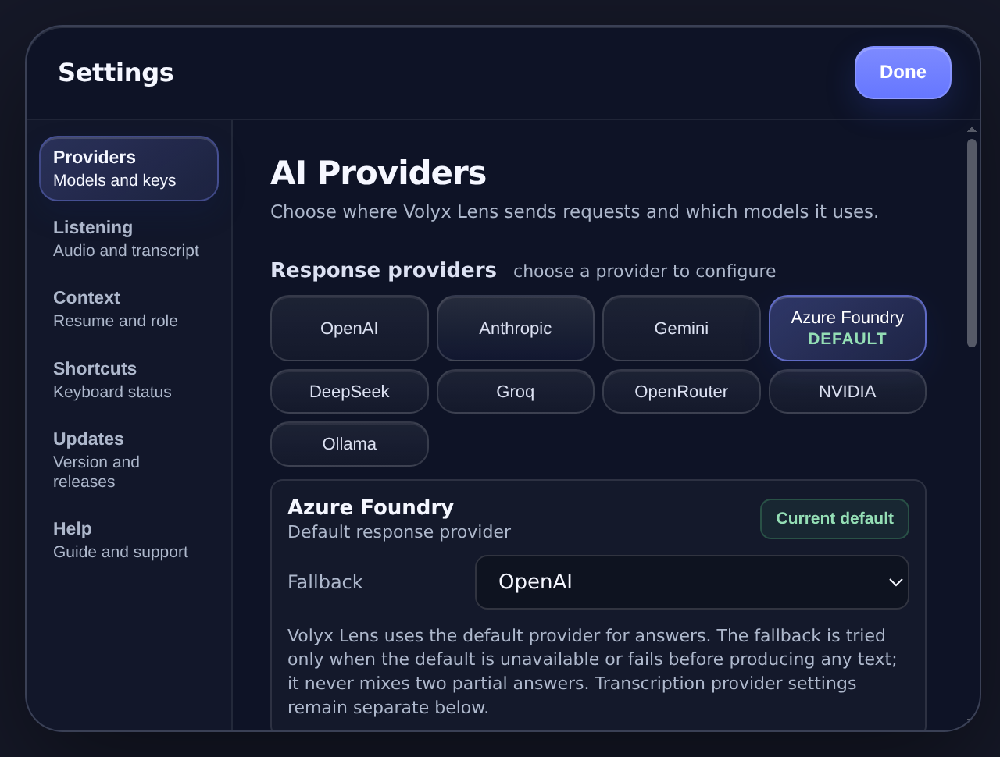

01
Pick a screen
Choose the display that contains the work you want help with. Screenshots are attached only when your request uses screen context.

Volyx LensPrivate context assistantmacOS · Windows · Linux
Volyx Lens brings your screen, voice, and meeting audio into one compact assistant. Select the inputs you need, choose your response and transcription providers, and keep control of the route.
Windows and Linux builds are live in v0.7.4, and unsigned macOS DMGs are attached to the release; the README gives the first-launch steps. The macOS build will be signed with an Apple Developer ID and notarized once release signing credentials are configured. Bring your own provider key.
Context, on your terms
Volyx Lens separates context into explicit inputs. Turn on only what the task calls for, then see the active combination before you send a prompt.
Choose the display that contains the work you want help with. Screenshots are attached only when your request uses screen context.
Speak naturally instead of switching windows to type. The microphone is a separate input with its own visible state.
Bring in the other side of a call for meeting or interview context. System audio stays optional and independent.
A route you can inspect
Volyx Lens sends selected context directly from the app to the AI provider you configure. There is no Volyx Lens-operated intermediary server in that request path.
Your chosen AI provider still receives the context you send and applies its own retention and privacy terms. Review those terms before sharing sensitive material.
Built for the edge of your workspace
The floating rail can move around your desktop. Expand it into chat, choose the context for the moment, then collapse it back out of the way.

One assistant, different context
Ask about an error, code, a dense document, a dashboard, or an unfamiliar interface without restating every visible detail.
Save multiple selected screens, such as files, visible problems, and test output, in local memory. A later explicit request uses a bounded visual window and discloses omitted screens.
Use separate You/Them transcript channels during a permitted meeting, then explicitly request reply suggestions, follow-up questions, or meeting recaps.
Opt-in meeting detection looks for a sustained two-sided conversation and tags the session locally. Save meeting history with a meeting badge, search saved meetings, and export records, transcripts, or generated meeting notes.
Bring your own model access
Configure the response and transcription providers that fit your work. Model availability and charges come from those providers, not Volyx Lens.
Realtime transcription runs on OpenAI, Azure Foundry, Deepgram, or Azure AI Speech. Batch transcription falls back to OpenAI, Google Gemini, or Groq Whisper. Local Whisper works only when a whisper-server binary is configured, and the published build does not bundle one. Pick a transcription language or let it auto-detect.
Response providers
Transcription only
Try the production release
Choose your operating system below; every build is served from GitHub Releases with its SHA-256 checksum attached.
Version 0.7.4 publishes the Windows installer, Linux AppImages, and unsigned macOS DMGs. On macOS, clear the quarantine flag with the xattr command in the installation steps; right-click → Open also works on most versions. The macOS build will be signed with an Apple Developer ID and notarized once release signing credentials are configured. Runs on macOS 13 or later, Windows 10 or 11, or a recent Linux distribution (experimental).
Built with boundaries
Capture permissions are explicit, but local consent and recording laws still apply. Do not capture private conversations, protected work, exams, or interviews when you lack permission.
Capture exclusion is best-effort. On macOS the app asks the system to keep its window out of captures; on Windows 10 2004 or later it uses WDA_EXCLUDEFROMCAPTURE. Linux has no capture-exclusion API, so the window can appear in screen shares there, and newer macOS capture paths or a physical camera can still record it anywhere. Never rely on it to bypass disclosure, supervision, proctoring, or security controls.
Source code is available under the Apache License 2.0.
Before you install
No. You configure your own supported provider. Requests travel from the desktop app to that provider, and the provider's own data terms apply.
The app uses Electron secure storage backed by the operating system (macOS Keychain, Windows DPAPI, Linux libsecret) when available. If secure storage is unavailable, keys are kept in memory for the session only and are never written to disk; Settings says so and lets you update or remove them. They must be entered again after a restart.
The v0.7.4 macOS DMGs attached to the release are unsigned, so macOS blocks a plain double-click. Drag Volyx Lens into Applications, then run xattr -cr "/Applications/Volyx Lens.app" once in Terminal, or right-click the app and choose Open. If macOS says the app is damaged, that Terminal command is what clears it. The macOS build will be signed with an Apple Developer ID and notarized once release signing credentials are configured. The Windows and Linux builds ship unsigned; every file has a .sha256 checksum, a CycloneDX SBOM is attached per platform and architecture, and Windows shows a SmartScreen "Unknown publisher" warning.
AI responses require a configured provider; with a local Ollama server they run fully offline. Realtime transcription uses your configured provider (OpenAI, Azure Foundry, Deepgram, or Azure AI Speech), and Local Whisper covers offline batch transcription only when a whisper-server binary is configured (the published build does not bundle one); automatic cloud fallback remains off by default.
Yes, opt-in. While listening, meeting detection looks for a sustained two-sided conversation between the Mic and System channels, then tags the session locally with a "Meeting in progress" indicator. With meeting history enabled, saved meetings get a meeting badge and stay searchable; you can export records, transcripts, or generated meeting notes. Detection runs in-session. Saved history stays on this device and Volyx Lens never uploads it; generating notes or cleaning a saved transcript does send that transcript to the provider you configured.
Yes. The settings screen lets you pick a language for transcription or leave it on auto-detect. Language selection is honored per job and normalized for both cloud providers and the optional local Whisper provider.
Yes. The public source is licensed under the Apache License 2.0, which permits commercial use, modification, and redistribution.